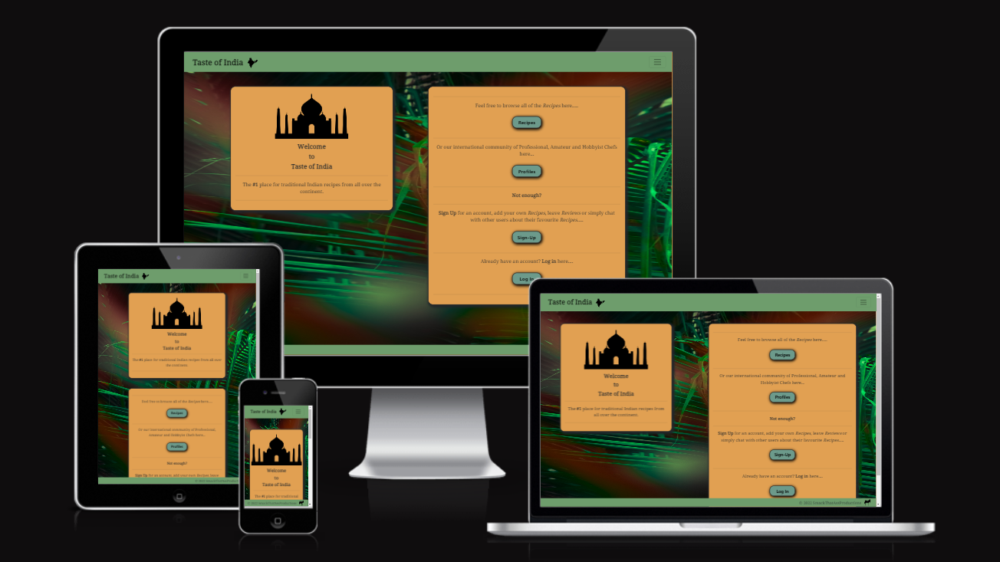

Education
National College of Ireland
HDip in Computer Science
Modules covered include:
- Software Development
- Object Oriented Programming
- Databases
- Web design & Client side scripting
- DevOpsSec
- Cloud Application Development
- Advanced Client side scripting
- Computer Architecture, Networks & Operating systems
Code Institute Diploma in Full Stack Software Development
Credit rated by The University of the West of Scotland
Modules Completed:
- HTML
- CSS
- Bootstrap
- JavaScript
- Python
- jQuery
- Flask
- Django
Colaiste Dhulaigh
College of further Education
Diploma in Communications and Media studies
Modules Completed:
- Photography
- TV Productions
- Sound engineering
- Sociology
Portfolio Projects
-

Forged Nature
Full Stack E-Commerce app for a local sculptor.
Find it here - Repo - Live site
Technologies used:
HTML5, CSS3, Bootstrap, JavaScript, Python, Django, Heroku, PostgreSQL, Stripe & Git -

Taste of India
Full stack recipe sharing app for lovers of Indian cuisine.
Find it here - Repo - Live site
Technologies used:
HTML5, CSS3, Bootstrap, JavaScript, Python, Django, Heroku, PostgreSQL & Git -

Heart of Darkness
A choose your own adventure command line game.
Find it here - Repo - Live site
Technologies used - HTML5, CSS3, Python, Heroku & Git -

ISS Tracker and Quiz
Interactive site about the history and accomplishments of the International Space Station, includes a quiz and a map with a real time view of the ISS on it’s path around Earth.
Find it here - Repo - Live site
Technologies used - HTML5, CSS3, JavaScript & Git -

Three Decades of Discovery
Static webpage about the history of the Hubble Space Telescope and it’s contributions to science.
Find it here - Repo - Live site
Technologies used - HTML5, CSS3 & Git
Experience
In 2021 I was unemployed as I transitioned from a bus driver to a student.
In 2019 I was employed with Matthews Coaches who are a privately owned coach company. This was a highly responsible job. Ensuring the safety of hundreds of people on a day-to-day basis as well as providing a high level of customer service. This involved cooperating with many different departments everyday including maintenance, inspectors, health and safety, clerical, human resources all with the aim of providing a safe and reliable service.
In 2007 I joined CIE, My role here was largely similar to the role I held at Matthews Coaches (see above), this came the added responsibility of handling cash , issuing fares, and liaising with inspectors, managers, maintenance staff etc. all over the country to ensure the smooth operation of a country wide service.
Skills
Languages:
- HTML
- CSS
- JavaScript
- Python
- Java
Databases:
- MySql
- PostgreSQL
- ElephantSQL
Frameworks:
- Bootstrap
- jQuery
- Django
Version Control:
- Git
- GitHub
Hosting:
- Heroku
- Github pages
Certificates
- Udemy - One week Python (14.5 hours)
- Udemy - The Web Developer Bootcamp (64 hours)
- Udemy - React - The Complete Guide (48.5 hours – 10 hours complete)
- Udemy - The ultimate MySQL Bootcamp (20.5 hours)
- Udemy - Python Django – Complete Course(18.5 hours)
- FreeCodeCamp - Responsive Web Design Certificate
- FreeCodeCamp - JavaScript Algorithms and Data Structures Certificate
Interests
I am interested in anything media related, I consider myself an amateur photographer and musician. As such I am familiar with Photoshop & Protools I love traveling, reading, cooking, gardening, listening to and playing music. I am quite creative and enjoy trying my hand at new things. Over the last couple of years I have taught myself basic DIY skills and built numerous projects around the house, these include a greenhouse, a deck, a vegetable garden, a kitchen booth, a TV unit and a Bookcase. While challenging I feel that these projects and the problems that arose have hugely helped my problem solving skills. Thank you for considering my CV, Ken Sheridan.